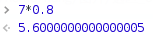

运算符
赋值运算符
| 符号 | 实例 |
|---|---|
| = | var = exp |
算术运算符
| 符号 | 实例 |
|---|---|
| + | exp1 + exp2 |
| - | exp1 - exp2 |
| * | exp1 * exp2 |
| / | exp1 / exp2 |
| % | exp1 % exp2 |
| ++ | var++ |
| ++ | ++var |
| -- | var-- |
| -- | --var |
var++递增运算符是先执行赋值运算，然后再执行递加运算。
var n = 4,
b = n++;
console.log(n);
console.log(b);
==> 5
==> 4
++var递增运算符是先执行递加运算，再进行赋值运算。
var n = 4,
b = ++n;
console.log(n);
console.log(b);
==> 5
==> 5
关系运算符
| 符号 | 实例 |
|---|---|
| == | exp1 == exp2 |
| != | exp1 != exp2 |
| < | exp1 < exp2 |
| <= | exp1 <= exp2 |
| > | exp1 > exp2 |
| >= | exp1 >= exp2 |
| === | exp1 === exp2 |
| !== | exp1 !== exp2 |
== 运算符与 != 运算符都会自动转换类型进行判断，而 === 运算符与 !== 运算符则不进行自动转换。
== 强制转换运算数类型的转换规则：
console.log('' == '0');
console.log(0 == '');
console.log(0 == '0');
console.log(false == 'false');
console.log(false == '0');
console.log(false == undefined);
console.log(false == null);
console.log(null == undefined);
==> false
==> true
==> true
==> false
==> true
==> false
==> false
==> true
关于==运算符的速查表：

关于===运算符的速查表：

综合速查表：
- 红色：===
- 橙色：==
- 黄色：<= 和 >= 同时成立，== 不成立
- 蓝色：只有 >=
- 绿色：只有 <=

逻辑运算符
| 符号 | 实例 |
|---|---|
| && | exp1 && exp2 |
| || | exp1 || exp2 |
| ! | !exp1 |
逻辑运算符&&、||和位运算符&、|的区别：
逻辑运算符&&、||中，如果&&的第一个运算数是false，就不再考虑第二个运算数，直接返回false，同理||的第一个运算数是true，也不再考虑第二个运算数，直接返回true。而&、|运算符需要进行逐位运算，比较两个运算数才得出结果，因而性能上&&、||会比&、|好。&、|本是位运算符，之所以可以进行"逻辑运算"，是由于JS是无类型的语言、各数据类型可以自由转换这一特性决定的，当用&、|进行"逻辑运算"时，实际上true被转换成1，false被转换成0，再进行逐位运算：
console.log(true & false);
==> 0
console.log(1 & 0);
==> 0
逻辑与运算：
| 第一个操作数 | 第二个操作数 | 结果 |
|---|---|---|
| true | true | true |
| true | false | false |
| false | true | false |
| false | false | false |
如果两边的操作数有一个操作数不是布尔值的情况下，与运算符就不一定返回布尔值，此时，遵循以下规则：
- 第一个操作数是对象，则返回第二个操作数
- 第二个操作数是对象，则第一个操作数返回true，才返回第二个操作数，否则返回false；
- 有一个操作数是null，则返回null；
- 有一个操作数是undefined，则返回undefined。
console.log('对象' && (5>4));
console.log((5>4) && '对象');
console.log((3>4) && '对象');
console.log((5>4) && null);
==> true
==> 对象
==> false
==> null
逻辑或运算
| 第一个操作数 | 第二个操作数 | 结果 |
|---|---|---|
| true | true | true |
| true | false | true |
| false | true | true |
| false | false | false |
与逻辑与操作相似，如果有一个操作数不是布尔值，逻辑或也不一定返回布尔值；此时，它遵循下列规则：
- 如果第一个操作数是对象，则返回第一个操作数。
- 如果第一个操作数求值为false，则返回第二个操作数。
- 如果两个操作数都是对象，则返回第一个操作数。
- 如果两个操作数都是null，返回null
- 如果两都为
undefined，返undefined。 - 如果两都为
NaN，返NaN
console.log('对象' || (5>3));
console.log((5>3) || '对象');
console.log('对象1' || '对象2');
console.log(null || null);
console.log(NaN || NaN);
console.log(undefined || undefined);
console.log(null || NaN);
console.log(undefined || NaN);
console.log(null || undefined);
console.log(undefined || null);
console.log(NaN || null);
==> 对象
==> true
==> 对象1
==> null
==> NaN
==> undefined
==> NaN
==> NaN
==> undefined
==> null
==> null
参考：
条件运算符
| 符号 | 实例 |
|---|---|
| ? : | exp1 ? exp2 : exp3 |
逗号运算符
| 符号 | 实例 |
|---|---|
| , | exp1, exp2 |
逗号运算符示例：
var param = 1, 2, 3, 4;
console.log(param);
==> Uncaught SyntaxError: Unexpected number(…)
console.log(param = 1, 2, 3, 4);
console.log(param);
==> 4
==> 1
位运算符
| 符号 | 实例 |
|---|---|
| & | exp1 & exp2 |
| | | exp1 | exp2 |
| ^ | exp1 ^ exp2 |
| ~ | ~exp1 |
| << | exp1 << exp2 |
| >> | exp1 >> exp2 |
| >>> | exp1 >>> exp2 |
console.log(~~true == 1);
console.log(~~false == 0);
console.log(~~"" == 0);
console.log(~~[] == 0);
console.log(~~undefined ==0);
console.log(~~!undefined == 1);
console.log(~~null == 0);
console.log(~~!null == 1);
console.log(~[]);
console.log(~~[]);
==> true
==> true
==> true
==> true
==> true
==> true
==> true
==> true
==> -1
==> 0
console.log(0x87654321 & 0xffff0000);
console.log(0x87654321 | 0xffff0000);
console.log(0xffff0000 ^ 0xff00ff00);
console.log(~0xffff0000);
==> -2023424000
==> -48351
==> 16776960
==> 65535
巧用&、|进行逻辑运算：
/**执行次数的奇偶**/
for(var i=0;i<=4;i++){
i & 1?console.log('i='+i+',奇数'):console.log('i='+i+',偶数');
}
==> i=0,偶数
==> i=1,奇数
==> i=2,偶数
==> i=3,奇数
==> i=4,偶数
扩展赋值运算符
| 符号 | 实例 | 等价 |
|---|---|---|
| += | var += exp | var = var + exp |
| -= | var -= exp | var = var - exp |
| *= | var *= exp | var = var * exp |
| /= | var /= exp | var = var / exp |
| %= | var %= exp | var = var % exp |
| &= | var &= exp | var = var & exp |
| |= | var |= exp | var = var | exp |
| ^= | var ^= exp | var = var ^ exp |
| <<= | var <<= exp | var = var << exp |
| >>= | var >>= exp | var = var >> exp |
| >>>= | var >>>= exp | var = var >>> exp |
valueOf运算符
语法为object.valueOf()，返回指定对象的原始值。
JavaScript的许多内置对象都重写了该函数，以实现更适合自身的功能需要。因此，不同类型对象的valueOf()方法的返回值和返回值类型均可能不同。
| 对象 | 返回值 |
|---|---|
| Array | 数组实例对象 |
| Boolean | 布尔值 |
| Date | 以毫秒数存储的时间值，从 UTC 1970 年 1 月 1 日午夜开始计算 |
| Function | 函数本身 |
| Number | 数字值 |
| Object | 对象本身。这是默认设置 |
| String | 字符串值 |
var arr = ["Code", true, 12, -5];
console.log(arr.valueOf() === arr);
console.log(true.valueOf() === true);
var newBool = new Boolean(true);
console.log(newBool.valueOf() == newBool);
console.log(newBool.valueOf() === newBool);
console.log(new Date(2013, 7, 18, 23, 11, 59, 230).valueOf());
function foo(){}
console.log(foo.valueOf() === foo);
var foo2 = new Function("x", "y", "return x + y;");
console.log( foo2.valueOf() === foo2 );
var num = 15.26540;
console.log(num.valueOf());
console.log();
var obj = {name: "张三", age: 18};
console.log(obj.valueOf() === obj);
var str = "http://kangcafe.com";
console.log(str.valueOf() === str);
var str2 = new String("http://kangcafe.com");
console.log(str2.valueOf() === str2);
==> true
==> true
==> true
==> false
==> 1376838719230
==> true
==> true
==> 15.2654
==> true
==> true
==> false
运算符的优先级
| 优先级 | 运算符 |
|---|---|
↑ 高 低 ↓ |
数组（[]） 括号（( )） |
| 増減（++ --） 负号（-） 取反（~） NOT（!） | |
| 乘除余（* / %） | |
| 加减（+ -) 连接字符串（+） | |
| 位移（<< >> <<<） | |
| 比较（< <= >= >） | |
| 比较（== != === !==） | |
| AND（&） | |
| XOR（^） | |
| OR（|） | |
| 且（&&） | |
| 或（||） | |
| 条件（? :） | |
| 赋值（=） 扩展赋值（+=等） | |
| 逗号（,） |
运算符重载
运算符重载，就是对已有的运算符重新进行定义，赋予其另一种功能，以适应不同的数据类型。